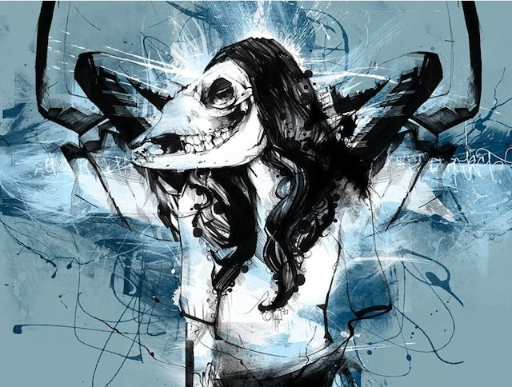

Giulio Rossi rezuma creatividad con cada personaje
Giulio Rossi, ilustrador digital autodidacta que se desarrolla entre el arte pop y el cómic para crear vibrantes personajes.
Giulio Rossi, ilustrador digital autodidacta que se desarrolla entre el arte pop y el cómic para crear vibrantes personajes.
Francesco Romoli, mediante la fotografía, el diseño gráfico o el collage compone atrayentes escenas en las que mezcla vintage y robótica.
David Ho (Nueva Jersey) es un reconvertido a lo digital, y eso se nota, cierto que sus herramientas ya no son los pinceles, óleos y acrílicos, sino programas como photoshop,...